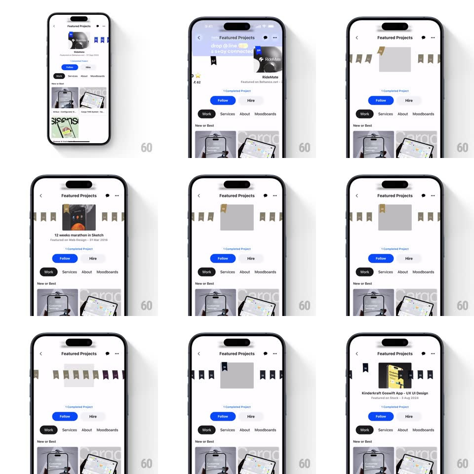

Media
Frame-by-frame

Rebuild this interaction 1:1: Behance's profile featured-projects header - the profile header collapses into a "Featured Projects" bar with a horizontal carousel of ribbon-flagged project cards that scrub across with tactile momentum, each card titled with its featured source and date.

Rebuild this interaction 1:1: Behance's profile featured-projects header - the profile header collapses into a "Featured Projects" bar with a horizontal carousel of ribbon-flagged project cards that scrub across with tactile momentum, each card titled with its featured source and date. ## Integration Integration: stack-agnostic spec - springs given as stiffness/damping, timed motions as duration + curve; map every value to your framework and animation library of choice. ## Scene Profile page (Rondesignlab): blue banner, avatar, stats, Follow/Hire buttons, tabs (Work, Services, About, Moodboards). Featured Projects view: a header bar with back chevron and title, a horizontal row of cards each crowned with a small ribbon-flag strip (like award pennants), card title and "Featured on Behance.net - 27 Sep 2023" meta, Follow/Hire and tabs below. ## Motion spec Pattern: collapsing profile into a ribbon carousel. - Scroll up: the banner and stats collapse into the compact "Featured Projects" header (250ms, profile content fading as the header title fades in, avatar shrinking into the back chevron's slot). - The carousel: cards scrub horizontally with real momentum (velocity-based, deceleration ~0.92/frame) and no hard paging - a soft magnetism eases the nearest card toward center over the last 100ms (spring ~340/24). - The centered card's ribbon flags lift and saturate (gray -> gold/blue, 250ms) while off-center cards stay muted and slightly scaled down (0.94) - the crown follows the focus. - Cards parallax internally: artwork shifts at 0.85x the card's travel, peeking neighbor cards' edges. - Reaching either end: a rubber overscroll (max 30px) then settle - the row feels physical. ## Calibration - Only one card is ever crowned; crown transfer happens at 50% crossover. - Tab bar and Follow/Hire persist below the carousel - browsing featured work never hides the hire action. ## Reduced motion Carousel scrolls without parallax or crown animation. ## Don't miss - The ribbon flags are the featured metaphor - they must visibly change state as focus moves, or the carousel is just a list. - Collapse keeps context: the profile's identity compresses, it doesn't disappear behind a new page.